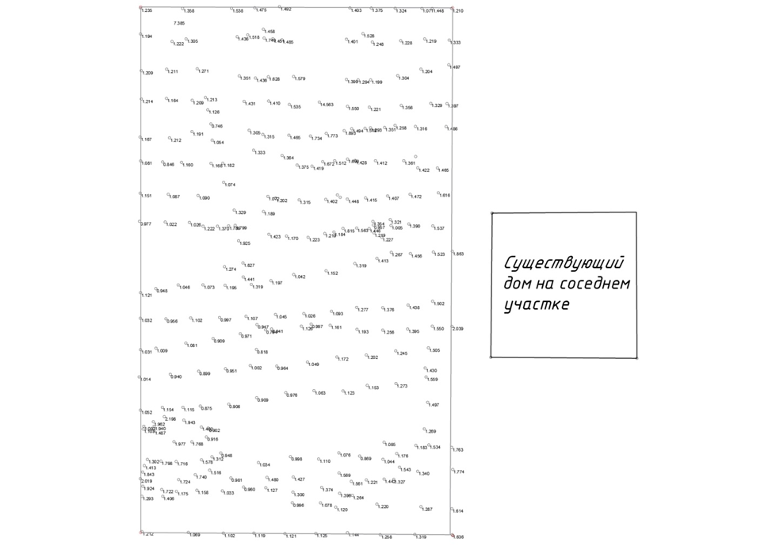
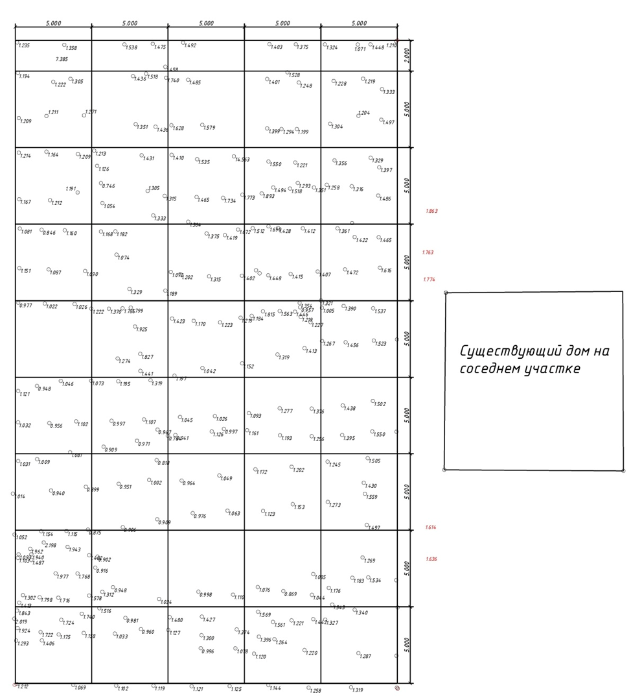
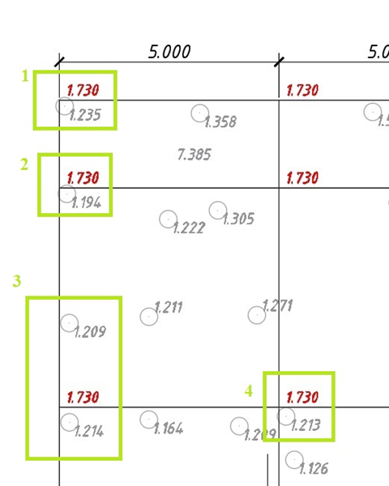
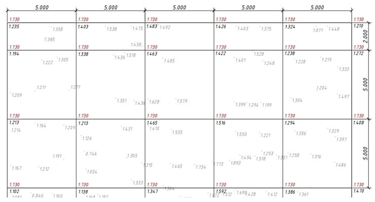
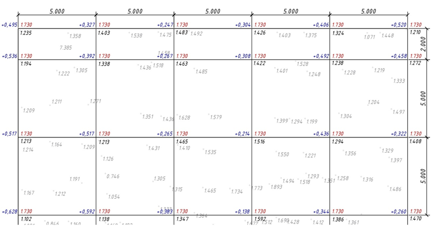
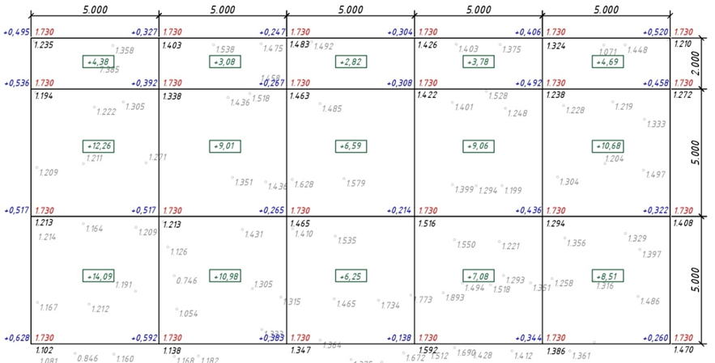
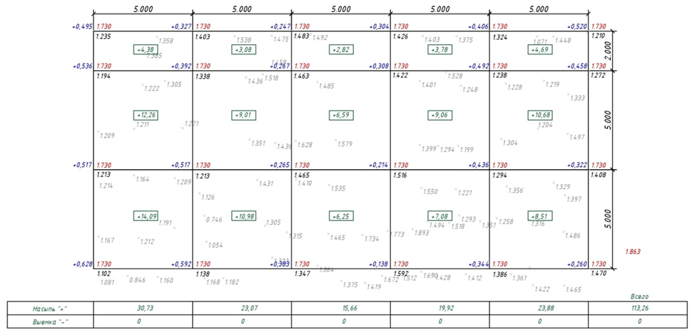

Составлям и рассчитываем план (картограмму) земляных масс
На этом уроке мы разберем самый точный способ расчета земляных работ, а также на реальном примере составим план земляных масс и пошагово рассчитаем точный объем.

План земляных масс – это документ, определяющий объемы земляных масс, которые необходимо переместить. Его составляют в случаях планировки территории, разработки котлованов или расчета объема насыпи. Он подходит в случае расчета больших объемов грунта, так как для маленьких объемов проще воспользоваться формулами средней площади или усеченной пирамиды.
Для начала работы нам нужен исходный документ: это может быть топографический план с горизонталями или тахеометрическая съемка.

На схеме обозначены границы участка для которого мы будет рассчитывать план земляных масс.
Задание: рассчитать объем грунта, который необходим для отсыпки земельного участка под строительство.
Наш участок находится в низине, территория справа уже отсыпана, на ней построен дом. Для того чтобы в будущем участок не подвергался подтоплению, его необходимо поднимать до отметки существующего участка.
Система координат и система высот – условная. Для будущей работы и единой системы высот на забор был вынесен репер с условной высотой +1.000 м.
Шаг 1. Разделим участок на равные квадраты
Размеры квадратов целесообразно принимать исходя из площади и размеров самого участка: 5, 10 или 20 метров, то есть чем меньше участок, тем меньше квадрат. Мы будем разбивать на квадраты 5*5, так как участок имеет габариты 25*42 м, форма прямоугольная – это упростит расчет.

Те участки, которые в процессе разделения оказались меньше, также необходимо включить в карту, но указать их реальный размер – у нас получился остаток 2м, так и указываем.
Если участок имеет неправильную форму, то выступы накладываются целые квадраты, просто в процессе расчета мы бы искали площадь самого выступа.
Далее будем рассматривать принцип расчета объема грунта на части всего поля, так как расчет для каждого квадрата будет проходить по одному и тому же алгоритму.
Шаг 2. Найдем проектную отметку, до уровня которой будем производить засыпку участка
Уровень необходимо привести к уровню соседнего участка. Для этого соседний участок был снят в нескольких точках. Находим среднюю отметку соседнего участка (на схеме они выделены красным):
Hср = (H1 + H2 + H3 + H4…+Hi)/x, где x – количество отметок
Hср = (1,636+1,614+1,774+1,763+1,863)/5 = 1,730 м
Эту отметку вписываем в правой части перекрестья квадратов красным цветом.
Шаг 3. Найдем фактические отметки

Перед вами фрагмент чертежа. В квадрате 1 высота точки топографической съемки равна 1,235м, она находится практически на углу квадрата, поэтому вершина квадрата будет равна 1,235м. В квадрате 2 ситуация аналогичная, высота квадрата 1,194м. В квадрате 3 топографические точки находятся на удаленном расстоянии от угла, такие высоты необходимо найти методом интерполяции.
Интерполяция – это процесс нахождения промежуточных значений по некоторым известным значениям. Путем промеров до линии квадрата, вычисляем, что отметка угла будет равна 1,213м. В квадрате 4 отметка будет равна 1,213, так же как в первом и втором случаях. Фактические отметки пишем в правой нижней части перекрестья.

Шаг 4. Вычислим рабочие отметки
Это разница проектной и фактической отметок на каждом перекрестье. Вычитать необходимо именно фактическую отметку от проектной.
Hрабочая = H проектная – Hфактическая
Результат записываем в верхнем левом углу каждого перекрестья синим цветом.
Когда результат получается со знаком «+», это будет означать, что в данном перекрестье требуется насыпь, если со знаком «-» – выемка.

Шаг 5. Вычислим объем грунта в пределах квадрата
Для этого необходимо знать площадь фигуры, в нашем случае это 2*5 = 10м2 (или 5*5 = 25м2).
Вычисляем среднюю рабочую отметку фигуры по формуле:
Hсред = (h1+h2+h3+h4)/4
Объем вычисляем по формуле: V = S*h
Результат записываем в центре фигуры. Для удобства можно записать объем со знаком: если рабочая отметка со знаком «+», то и объем будет с «+».

Шаг 6. Считаем сумму по каждому столбцу
Результат записываем в ведомость внизу сетки квадратов, при этом объемы со знаком «+» записываем в строку «насыпь», если есть объемы со знаком «-» в строку «выемка». В нашем случае есть только насыпь. Когда объемы по каждому столбцу будут подсчитаны, считаем сумму всех значений строки и записываем в последнем столбце «всего».

Мы рассчитали фрагмент картограммы, аналогично рассчитывается вся сетка квадратов. Объем на весь участок получился более 500 м3.
Как вы поняли из урока, составление картограммы – это простая математика. Поэтому важно запастись терпением и достаточным количеством времени, чтобы получить точный результат.